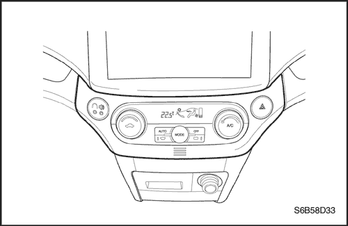
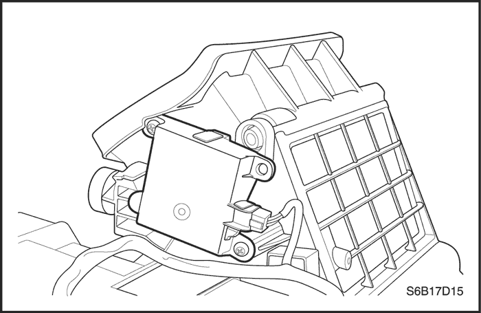
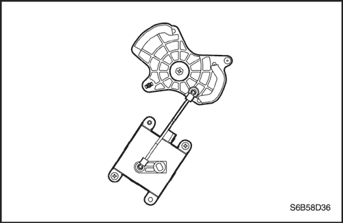
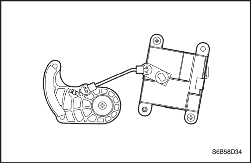
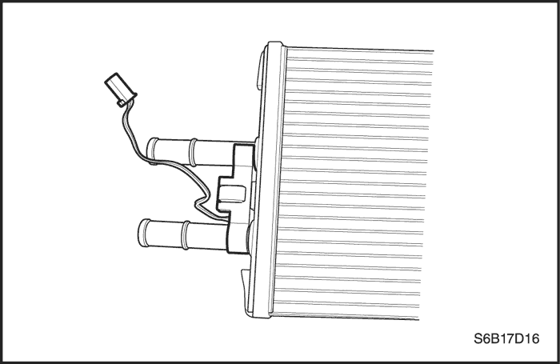
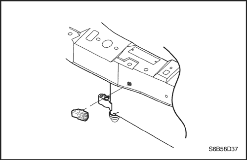
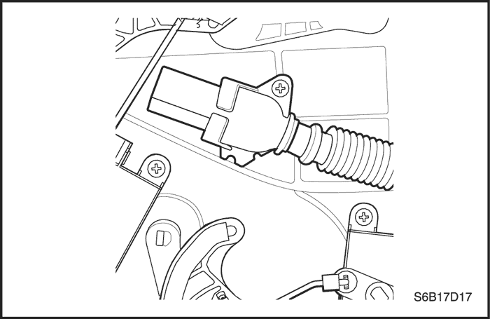
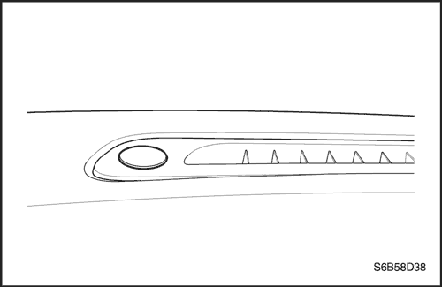
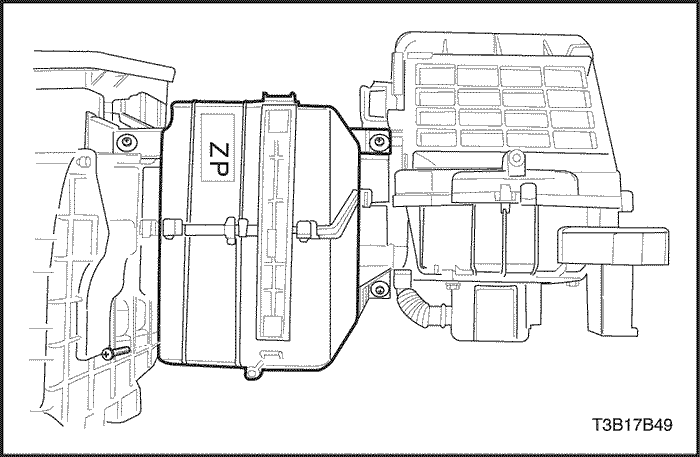
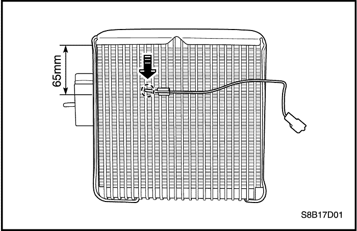

SECCIÓN
MANTENIMIENTO Y REPARACIÓN
servicio con vehículo en marcha
PROCEDIMIENTOS DE SERVICIO GENERALES DEL SISTEMA A/C
Procedimientos de servicio generales
- Procedimientos de descarga, adición de aceite, evacuación y carga para el sistema de aire acondicionado
- Manipulación de las tuberías y racores del refrigerante
- Manipulación del refrigerante.
- Mantenimiento de la estabilidad química en el sistema de refrigeración.
- Sustitución de juntas tóricas.
COMPONENTES DE SERVICIO
Componentes HVAC comunes
Aquellos componentes utilizados en sistemas no automáticos están contemplados en otras secciones del presente manual.
- Motor del ventilador.
- Mangueras del calefactor.
- Resistencia del ventilador.
- Relé de velocidad alta del ventilador.
- Conjunto de la caja del distribuidor de aire/calefactor (módulo del A/A)
- Núcleo del calefactor.
- Transductor de presión del A/A.
- Relé del compresor de A/A.
- Filtro de aire.
- Válvula de expansión A/A.
- Tubería de alta presión de A/A.
- Núcleo de evaporador.
- Conjunto de mangueras de aspiración de A/A.
- Compresor de manguera de descarga de A/A a condensador.
- Compresor.
- Condensador.
- Receptor-secador.



Conjunto de control de temperatura automático
Procedimiento de desmontaje
- Desconecte el cable negativo de la batería.
- Desmonte la moldura del equipo de sonido. Consulte la Sección 9E, Instrumentación/información para el conductor.
- Desmonte la tapa del interruptor de a/a.
- Quite los tornillos del ATC.
- Desenchufe los conectores eléctricos.
procedimiento de montaje
- Coloque el conjunto del control de temperatura automático en la moldura central y ponga los tornillos de fijación.
Apretar
Apriete los tornillos de fijación del conjunto de control hasta 2 N•m (18 lb-pulg.).
- Enchufe los conectores eléctricos.
- Monte la moldura del equipo de sonido. Consulte la Sección 9E, Instrumentación/información para el conductor.
- Conecte el cable negativo de la batería.

Motor de compuerta de aire de admisión
Indicado para conducción a izquierdas, conducción a derechas similar
Procedimiento de desmontaje
- Desconecte el cable negativo de la batería.
- Desmonte el panel de instrumentos. Consulte la Sección 9E, Instrumentación/información para el conductor.
- Desenchufe el conector eléctrico.
- Quite los tornillos de fijación del motor.
- Desmonte el motor.
procedimiento de montaje
- Monte el motor con sus tornillos de fijación.
- Monte la varilla de accionamiento.
- Enchufe el conector eléctrico.
- Desmonte el panel de instrumentos. Consulte la Sección 9E, Instrumentación/información para el conductor.
- Conecte el cable negativo de la batería.

Modo motor de puerta
Indicado para conducción a izquierdas, conducción a derechas similar
Procedimiento de desmontaje
- Desconecte el cable negativo de la batería.
- Retire la tapa inferior del panel de instrumentos. Consulte la Sección 9G, Guarnecido interior.
- Desenchufe el conector eléctrico.
- Desmonte la varilla de accionamiento del motor sacando la varilla de la palanca con unos alicates de punta fina.
- Quite los tornillos de fijación del motor.
- Desmonte el motor de la compuerta de modo.
procedimiento de montaje
- Monte el motor de la compuerta de modo con sus tornillos de fijación.
- Monte la varilla de accionamiento.
- Enchufe el conector eléctrico.
- Monte la tapa inferior del panel de instrumentos. Consulte la Sección 9G, Guarnecido interior.
- Conecte el cable negativo de la batería.

Motor de compuerta de mezcla de aire
Procedimiento de desmontaje
- Desconecte el cable negativo de la batería.
- Retire la tapa inferior del panel de instrumentos. Consulte la Sección 9G, Guarnecido interior.
- Desenchufe el conector eléctrico.
- Desmonte la varilla de accionamiento del motor sacando la varilla de la palanca con unos alicates de punta fina.
- Quite los tornillos de fijación del motor.
- Desmonte el motor de la compuerta de modo.
procedimiento de montaje
- Monte el motor de la compuerta de modo con sus tornillos de fijación.
- Monte la varilla de accionamiento.
- Enchufe el conector eléctrico.
- Monte la tapa inferior del panel de instrumentos. Consulte la Sección 9G, Guarnecido interior.
- Conecte el cable negativo de la batería.

Sensor de agua
Indicado para conducción a izquierdas, conducción a derechas similar
Procedimiento de desmontaje
- Desconecte el cable negativo de la batería.
- Quite la tapa del núcleo del calefactor. Consulte la Sección 7B, Sistema de calefacción, ventilación y aire acondicionado de control manual.
- Desenchufe el conector eléctrico.
- Desmonte el sensor de la tubería del núcleo del calefactor.
- Desmonte el sensor.
procedimiento de montaje
- Monte el sensor con su tornillo de fijación.
- Enchufe el conector eléctrico.
- Ponga la tapa del núcleo del calefactor. Consulte la Sección 7B, Sistema de calefacción, ventilación y aire acondicionado de control manual.
- Conecte el cable negativo de la batería.

Sensor de temperatura de aire ambiente
Procedimiento de desmontaje
- Desconecte el cable negativo de la batería.
- Desmonte el parachoques delantero. Consulte la Sección 9O, "Parachoques y tableros".
- Desenchufe el conector eléctrico del sensor de temperatura de aire ambiente.
- Desmonte el sensor de temperatura de aire ambiente de su soporte.
procedimiento de montaje
- Monte el sensor de temperatura de aire ambiente en su soporte.
- Enchufe el conector eléctrico.
- Monte el parachoques delantero. Consulte la Sección 9O, "Parachoques y tableros".
- Conecte el cable negativo de la batería.

Sensor de temperatura del interior del vehículo
Procedimiento de desmontaje
- Desconecte el cable negativo de la batería.
- Retire la tapa inferior del panel de instrumentos. Consulte la Sección 9G, Guarnecido interior.
- Desenchufe el conector eléctrico.
- Quite los tornillos.
- Retire la tubería.
procedimiento de montaje
- Monte el sensor dentro del coche.
- Coloque y apriete los tornillos de fijación del sensor dentro del coche.
- Monte el tubo de admisión de aire y enchufe el conector eléctrico.
- Monte la tapa inferior del panel de instrumentos. Consulte la Sección 9G, Guarnecido interior.
- Conecte el cable negativo de la batería.

Sensor solar
Procedimiento de desmontaje
- Desconecte el cable negativo de la batería.
- Haga palanca ligeramente para levantar y desmontar el sensor solar.
- Sujete el conector eléctrico para evitar que se caiga debajo del salpicadero.
- Desenchufe el conector eléctrico y desmonte el sensor solar.
procedimiento de montaje
- Enchufe el conector eléctrico.
- Meta y apriete el sensor solar en su posición del salpicadero.
- Conecte el cable negativo de la batería.

Sensor de admisión
Procedimiento de desmontaje
- Desconecte el cable negativo de la batería.
- Desmonte el núcleo del evaporador. Consulte la Sección 7B, Sistema de calefacción, ventilación y aire acondicionado de control manual.

- Desmonte el sensor de admisión con el conector.
procedimiento de montaje
Aviso: El sensor debe estar colocado en la posición que se muestra en la ilustración (altura: 65 mm, columna: 8ª)
Aviso: Compruebe que la posición del sensor es correcta. De lo contrario, podría afectar al rendimiento del aire acondicionado.
- Monte el sensor de admisión con el conector.
- Monte el núcleo del evaporador. Consulte la Sección 7B, Sistema de calefacción, ventilación y aire acondicionado de control manual.
- Conecte el cable negativo de la batería.
REPARACIÓN DE LA UNIDAD
INSPECCIÓN DEL COMPRESOR DE AIRE ACONDICIONADO V5
Inspección del compresor
- Bobina del embrague.
- Conjunto del cubo y plato del embrague.
- Rotor del embrague y cojinete.
- Compresor V5, localización de componentes.
- Conjunto de la válvula de control.
- Junta tórica entre el cilindro y el cabezal delantero.
- Prueba de fugas (externas).
- Válvula de descarga de presión.
- Cabezal trasero, junta, plato de válvulas, plato de válvulas de aspiración y junta tórica.
- Cambio del retén de eje.
DESCRIPCIÓN GENERAL Y FUNCIONAMIENTO DEL SISTEMA
INFORMACIÓN GENERAL
El sistema V5
- Componentes del sistema - funcionales.
- El sistema de aire acondicionado V5.
- Compresor V5 - descripción de funcionamiento.
- Compresor V5 - Descripción general
Componentes del sistema - controles
Controlador
El funcionamiento del sistema de A/A se controla mediante los interruptores situados en el cabezal de control. Este sistema de calefacción y ventilación montado sobre la consola incluye los siguientes elementos:
Pulsadores del control de temperatura
- Eleve la temperatura del aire que entra en el vehículo girando el interruptor giratorio en el sentido de las agujas del reloj (dirección de la flecha roja).
- Baje la temperatura girando el interruptor en el sentido contrario al de las agujas del reloj (dirección de la flecha azul).
- Accione la compuerta de mezcla de aire mediante el motor eléctrico.
- Varíe la mezcla de aire que pasa a través del núcleo del calefactor con el aire que no pasa por dicho núcleo.
Cada vez que se pulsa el interruptor, la temperatura cambia en incrementos de 0,5°C (1°F). Todo ello aparece en la ventana de la temperatura en el indicador de funciones.
El indicador de funciones
Se trata de una pantalla VFD que indica el estado de los ajustes de control seleccionados. Comenzando por la izquierda de la pantalla, las secciones son las siguientes:
- Ajuste de la temperatura: indica la temperatura seleccionada con el mando de control de la temperatura.
- Estado automático: indica si el sistema está funcionando en modo completamente automático o en modo manual.
- Icono del antivaho: indica la selección manual del modo de desescarchado total.
- Modo: representado por un icono, muestra el modo elegido por el sistema en modo automático (o por el conductor en modo manual) con una flecha luminosa que indica la trayectoria del aire.
- A/A: un icono en forma de copo de nieve indica si el A/A está encendido o apagado.
- Velocidad del ventilador: indica la velocidad iluminando una barra basada en segmentos, añadiendo segmentos en orden ascendente según aumenta la velocidad del ventilador hasta llegar a la velocidad máxima (8).
Siete pulsadores adicionales
- Desescarchado total: hace que los motores de modo dirijan todo el aire hacia las salidas del parabrisas y de las ventanillas auxiliares para conseguir la máxima acción antivaho.
- Admisión de aire: para seleccionar admisión de aire fresco, que es la opción predeterminada, o recirculación del aire. Las flechas del flujo del aire de la pantalla indican el modo en vigor.
- Interruptor de automático total: mantiene automáticamente la temperatura ajustada. En este modo, el sistema de control de la temperatura del habitáculo totalmente automático (FATC) controla los siguientes elementos:
- Motor de la compuerta de la mezcla de aires.
- Motor de la compuerta de modo.
- Velocidad del motor del ventilador.
- El motor de la compuerta de admisión de aire.
- A/A conectado/desconectado.
- Interruptor OFF: desconecta el aire acondicionado automático y el control del ventilador.
- Interruptor de modo: permite la selección manual del sentido del flujo del aire.
- La selección se indica en la pantalla de funciones.
- Cada vez que se pulsa el interruptor de modo, se revisualiza en la pantalla la función siguiente.
- Interruptor del A/A: permite la selección y el control manual de las funciones del aire acondicionado.
- Interruptor del antivaho: enciende el calefactor eléctrico del antivaho de la luneta trasera y los espejos retrovisores exteriores, si el vehículo dispone de retrovisores con calefacción.
El botón de control del ventilador permite la selección manual entre las 8 velocidades del ventilador.
Transductor de presión
La conmutación del transductor de presión incorpora las funciones de los interruptores de desconexión de alta y de baja presión junto con el interruptor de funcionamiento cíclico del ventilador. El transductor de presión se encuentra situado en la tubería del lado de alta presión del líquido refrigerante detrás del montante derecho, entre el dicho montante y el tabique cortafuegos. La salida de este transductor de presión llega hasta el módulo de control electrónico del motor (ECM), que controla el funcionamiento del compresor en función de la señal de presión.
Parada del compresor con el acelerador totalmente abierto (pisado a fondo) (WOT)
Durante la aceleración con el pedal del acelerador pisado a fondo, el sensor de posición del acelerador (TPS) envía una señal al ECM que, a su vez, controla el embrague del compresor.
Corte en caso de RPM elevadas
A medida que la velocidad del motor aumenta y las rpm se acercan a su límite máximo, el ECM liberará el embrague del compresor hasta que el motor reduzca su velocidad y las rpm sean más bajas.